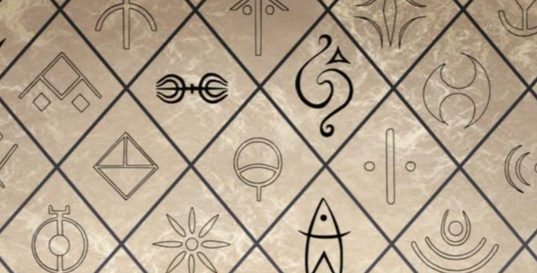
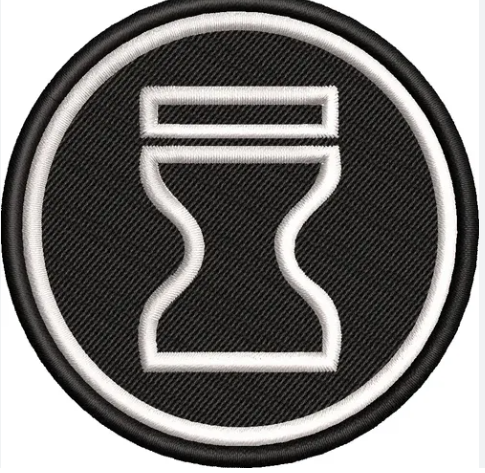
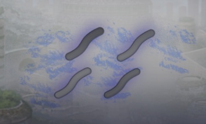
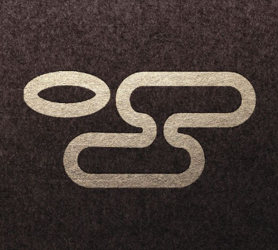
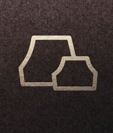
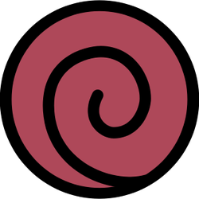

OS CLÃS NINJAS





NOME DA VILA
Resumo dos Clãs
Clã Aburame
Conhecidos pelo uso de insetos como armas. Vivem em simbiose com espécies sob a pele, que se alimentam de chakra em troca de poderes mortais.
- Características Físicas: Roupas que cobrem a maior parte do corpo e óculos escuros.
- Membros Notáveis: Shino, Torune, Shibi.
Clã Akimichi
Famosos pela força física e controle de calorias. Membros do trio lendário Ino-Shika-Cho.
- Características Físicas: Estrutura física corpulenta, símbolos de comida nas bochechas.
- Membros Notáveis: Choji, Choza.
Clã Kurama
Possuem um dom raro para Genjutsu tão poderoso que o cérebro da vítima acredita na ilusão ao ponto de causar dano físico real.
- Características Físicas: Variadas, geralmente aparência pálida em membros habilidosos.
- Membros Notáveis: Yakumo.
Clã Yamanaka
Especialistas na manipulação da mente, capazes de assumir corpos de inimigos e conectar telepatas em massa.
- Características Físicas: Cabelos loiros e olhos claros (predominante).
- Membros Notáveis: Ino, Inoichi.
Clã Hatake
Guerreiros prodigiosos, extremamente talentosos em rastreamento, kenjutsu e domínios elementais variados.
- Características Físicas: Cabelos grisalhos/prateados.
- Membros Notáveis: Kakashi, Sakumo.
Clã Sarutobi
A personificação da Vontade do Fogo. Conhecidos pela grande reserva de chakra e domínio sobre múltiplos elementos.
- Características Físicas: Traços austeros, cabelos escuros, comumente usam armaduras ou cachimbos.
- Membros Notáveis: Hiruzen, Asuma, Konohamaru.
Clã Hyuuga
Divididos entre a casa principal e secundária, são donos do cobiçado Byakugan, que enxerga o sistema circulatório de chakra perfeitamente.
- Características Físicas: Olhos totalmente brancos, cabelos escuros lisos.
- Membros Notáveis: Neji, Hinata, Hiashi.
Clã Inuzuka
Lutam em perfeita sincronia com seus cães ninja (Ninken) e possuem sentidos ampliados, principalmente o olfato.
- Características Físicas: Marcas vermelhas nas bochechas em forma de presas, olhos selvagens.
- Membros Notáveis: Kiba, Tsume.
Herança Lee
Incapazes de usar ninjutsu, compensam com esforço brutal. Mestres absolutos no Goken (Punho Forte) e Oito Portões.
- Características Físicas: Sobrancelhas grossas, roupas de treinamento.
- Membros Notáveis: Rock Lee.
Clã Nara
Mentes táticas brilhantes que utilizam sombras físicas para imobilizar e enforcar seus inimigos.
- Características Físicas: Cabelos escuros amarrados em rabo de cavalo ou coque.
- Membros Notáveis: Shikamaru, Shikaku.
Clã Senju
Descendentes diretos do sábio, dotados de vitalidade absurda. Alguns poucos manifestam a rara manipulação de madeira (Mokuton).
- Características Físicas: Traços fortes, geralmente cabelos castanhos ou claros.
- Membros Notáveis: Hashirama, Tobirama, Tsunade.
Clã Uchiha
O temido clã da maldição do ódio. Donos do Sharingan, enxergam a verdade das batalhas e executam genjutsus impenetráveis.
- Características Físicas: Cabelos e olhos escuros (que se tornam vermelhos quando ativados).
- Membros Notáveis: Madara, Sasuke, Itachi.
Clã Shimura
Pragmáticos e impiedosos. Focados no sacrifício necessário e no elemento vento, agindo constantemente pelas sombras políticas.
- Características Físicas: Cicatrizes ou modificações corporais ocultas (opcional).
- Membros Notáveis: Danzou.
Clã Akasuna
Mestres das marionetes. Transformam corpos caídos em armas letais e controlam venenos com maestria no campo de batalha.
- Características Físicas: Roupas adaptadas para pergaminhos de marionete.
- Membros Notáveis: Sasori, Chiyo.
Clã Shira
Sem aptidão para ninjutsu, desenvolveram o Método de Respiração dos Sete Paraísos para se igualarem a feras em combate corpo a corpo.
- Características Físicas: Vigorosos e calmos.
- Membros Notáveis: Shira.
Linhagem Kazekage
A realeza de Suna. Possuidores do Jiton (Magnetismo), manipulam Areia de Ouro ou Areia de Ferro para aniquilação em massa.
- Características Físicas: Cabelos com tons exóticos (vermelho, ruivo, castanho escuro).
- Membros Notáveis: Rasa, Gaara.
Linhagem Shakuton
Manifestam a liberação do calor escaldante, evaporando os fluidos corporais de seus inimigos em meros segundos.
- Características Físicas: Temperatura corporal muito elevada.
- Membros Notáveis: Pakura.
Clã Yome
Rastreadores natos. Dilatam suas pupilas para captar reflexos da luz em gotículas d'água no ar e observar milhas de distância.
- Características Físicas: Olhos extremamente adaptativos à luz.
- Membros Notáveis: Yome.
Herança Hanzou
Implantam veneno puro em seus próprios corpos. Podem exalar gases tóxicos e sobreviver em ambientes contaminados.
- Características Físicas: Máscaras respiratórias, marcas cirúrgicas nos lados do tronco.
- Membros Notáveis: Hanzou da Salamandra.
Clã Hoshigaki
Predadores formidáveis. Possuem guelras, pele texturizada e reservas monstruosas de chakra, assemelhando-se a tubarões.
- Características Físicas: Pele cinza/azulada, dentes pontiagudos e guelras no rosto/ombros.
- Membros Notáveis: Kisame, Shizuma.
Clã Hozuki
Seus corpos podem se dissolver inteiramente em água (Suika no Jutsu), anulando ataques contundentes e armas brancas.
- Características Físicas: Corpo fluido e cabelos geralmente brancos/claros. Precisa se hidratar constantemente.
- Membros Notáveis: Suigetsu, Mangetsu.
Clã Kaguya
Um clã bárbaro de sede por sangue, portadores do Shikotsumyaku, manipulando o próprio esqueleto para atacar e defender.
- Características Físicas: Marcas circulares na testa, pele pálida.
- Membros Notáveis: Kimimaro.
Herança Utakata
Focam no estilo elegante porém letal de Ninjutsu de Bolhas de Sabão, que explodem ou aprisionam alvos.
- Características Físicas: Elegantes, sempre portando tubos/canudos para as bolhas.
- Membros Notáveis: Utakata.
Clã Akagan (Chinoike)
Originários de outra terra mas escondidos na Névoa, portam o Ketsuryūgan, um genjutsu sangrento poderoso.
- Características Físicas: Olhos vermelho-sangue intensos.
- Membros Notáveis: Chino.
Clã Suikasan
Focados em brutalidade corporal e táticas covardes usando o ocultamento perfeito e cabelos como arma pontiaguda.
- Características Físicas: Muito altos e robustos, cabelos laranjas/compridos.
- Membros Notáveis: Fuguki.
Clã Terumi
Prodígios monstruosos possuidores de não apenas uma, mas duas Kekkei Genkai destrutivas: Yōton (Lava) e Futton (Fervura).
- Características Físicas: Belos traços, cabelos geralmente avermelhados/castanhos.
- Membros Notáveis: Mei Terumi.
Clã Yuki
Foram caçados na Névoa por seu poder assustador. Dominam o Hyōton (Gelo), criando espelhos congelados em combate.
- Características Físicas: Pele pálida, traços delicados, andróginos.
- Membros Notáveis: Haku.
Clã Yotsuki
Um dos mais respeitados clãs de Kumo, fiéis aliados do Raikage. Nunca revelam segredos a inimigos, mesmo sob tortura.
- Características Físicas: Pele escura, fortes e musculosos.
- Membros Notáveis: Kiyoi Yotsuki.
Clã Chinoike (Vale do Inferno)
Antigos residentes do País do Relâmpago exilados no Vale do Inferno. Mestres do Ketsuryūgan e ilusões sangrentas.
- Características Físicas: Olhos vermelhos brilhantes, estatura menor.
- Membros Notáveis: En Oyashiro.
Linhagem Jugo
Aptos a absorver energia natural passivamente. Isso lhes dá força insana (Modo Sábio Imperfeito), mas também fúria assassina.
- Características Físicas: Corpo que sofre mutações monstruosas quando enfurecido.
- Membros Notáveis: Jugo.
Clã Kanji
Operadores táticos e seladores, essenciais para o transporte de pergaminhos e tesouros de Kumogakure.
- Características Físicas: Tatuagens de selamento espalhadas pelo corpo.
- Membros Notáveis: [Membros Vagas].
Clã Karyū
Conseguem materializar o relâmpago de forma tão densa que cria formas de dragões e criaturas, usando o Raiton como armamento ofensivo contínuo.
- Características Físicas: Cabelos espetados, frequentemente azuis ou amarelos.
- Membros Notáveis: [Membros Vagas].
Clã Kurama (Kumo)
Ramo diplomático que emigrou de Konoha. Usam o clarão do Raiton para induzir inimigos instantaneamente em seus Genjutsus.
- Características Físicas: Pálidos, veste padrão de Kumo.
- Membros Notáveis: [Membros Vagas].
Herança Toroi
Guerreiros robustos que portam o Jiton (Magnetismo). Eles magnetizam armas, garantindo que o próximo ataque nunca erre o inimigo marcado.
- Características Físicas: Olhos intensos, geralmente carregam shurikens quadradas enormes.
- Membros Notáveis: Toroi.
Clã Yomi
Envoltos em mistério, lidam com jutsu médico sombrio e reanimação neural. Suas técnicas manipulam fluidos corporais escuros.
- Características Físicas: Olhos obscuros, marcas roxas abaixo dos olhos.
- Membros Notáveis: Yomi.
Clã Ameyuki
Operários fundamentais da fundação de Iwa, eles endurecem seus corpos como diamantes e manipulam a rocha com as próprias mãos.
- Características Físicas: Corpos brutos, muitas vezes não usam camisas.
- Membros Notáveis: [Membros Vagas].
Linhagem Katsu
Mestres do Bakuton (Explosão). Combinam Doton e Raiton para infundir chakra em argila e causar atentados em grande escala.
- Características Físicas: Bocas adicionais nas palmas das mãos e no peito (opcional).
- Membros Notáveis: Deidara, Gari.
Clã Kamizuru
Especialistas no uso de abelhas gigantes. Já foram rivais do Clã Aburame, buscando restaurar sua glória na Pedra.
- Características Físicas: Roupas amarelas/listradas (padrões de abelha).
- Membros Notáveis: Suzumebachi.
Herança Mū
Secreta e letal. Dominam as três naturezas base (Doton, Katon, Futon) para criar a Poeira (Jinton), desintegrando alvos instantaneamente.
- Características Físicas: Costumam usar faixas cobrindo o corpo inteiro (múmias).
- Membros Notáveis: Mū (Segundo Tsuchikage).
Herança Origami
Podem infundir seu chakra no papel. Esse material, uma vez seco com Doton, ganha rigidez e filo igual a lâminas de metal.
- Características Físicas: Acessórios e dobraduras de papel na roupa.
- Membros Notáveis: Konan (como usuária notória).
Herança Guren
Transmutam a matéria ao redor (e o corpo dos inimigos) em Cristal indestrutível (Shōton) através de ninjutsus altamente reflexivos.
- Características Físicas: Visual limpo, geralmente vestem verde e vermelho.
- Membros Notáveis: Guren.
Clã Tsushi
Caçadores que se utilizam de Meisaigakure. Controlam as refrações de luz nas pedras para ficar totalmente invisíveis e apagar seus cheiros.
- Características Físicas: Discretos, poucas roupas com metal para não fazer ruído.
- Membros Notáveis: Taiseki.
Clã Iburi
Possuem o trágico dom de converter seus corpos em fumaça pura. São invulneráveis na forma de gás, mas um forte vento pode matá-los acidentalmente.
- Características Físicas: Pele levemente cinzenta, tosse constante ou necessidade de viver em cavernas sem vento.
- Membros Notáveis: Yukimi.
Clã Uzumaki
Príncipes do Redemoinho. Conhecidos mundialmente pela vitalidade absurda e Fuinjutsu tão perigoso que o clã precisou ser aniquilado em uma guerra conjunta.
- Características Físicas: Cabelos vermelho-carmesim brilhantes.
- Membros Notáveis: Kushina, Mito, Naruto, Nagato.